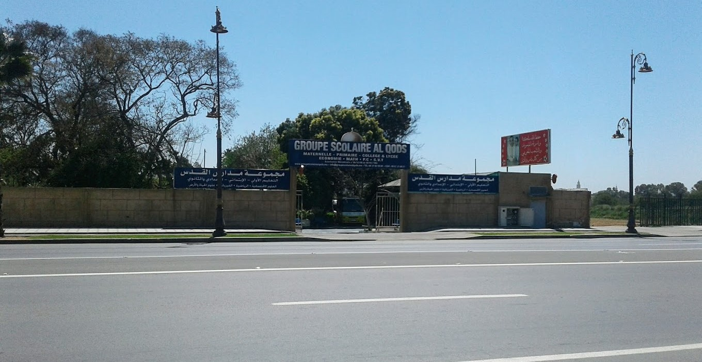

Nous optons pour l'éducation positive, le plurilinguisme, l'initiation à la lecture, à l'esprit entrepreneurial, à la prise d'initiative et de parole en public via l'activité quasi quotidienne du speech, nous éduquons à la citoyenneté par la commémoration des fêtes nationales et par la performance de l'hymne national du royaume du Maroc à chaque début de semaine, nous plantons dans les esprits frais de nos apprenants les valeurs de la foi en Dieu par la récitation de Sourates du coran chaque jour, sans omettre de mentionner que nous poussons nos élèves sur les devants de la scène des compétitions, à l'échelle provinciale, régionale, nationale et internationale.
Approche pédagogique
